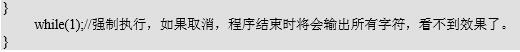
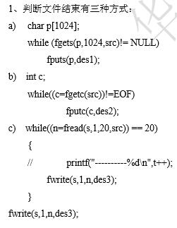

本实验通过一个简单的程序计算默认缓冲区的大小，理解标准 I/O 提供的三种类型的缓存。
深入了解标准 IO 的三种类型，即全缓存，行缓存，不带缓存。
带有 Linux 操作系统的 PC 机。
全缓冲：当填满 I/O 缓存后才进行实际的 I/O 操作；
行缓冲：当在输入和输出中遇到新换行符(‘\n’)时，进行 I/O 操作；
不带缓冲：标准 I/O 库不对字符进行缓冲，例如 stderr；
1、向缓冲区中输入字符
2、当往缓冲区中写的字符数目超过缓冲区大小的时候，才执行输出。
3、可以手工计算出缓冲区大小（341*3+1=1024）
参考代码：

本实验通过一个简单的 copy 程序，完成文件的复制程序，了解基本的标准 I/O 文件读写的基本步骤。
深入了解标准 IO 文件读写的基本原理。
1.学习如何判断文件是否结束
2.熟练掌握标准 I/O 函数
带有 Linux 操作系统的 PC 机。

2、要拷贝一个文件，即要有源文件和目标文件，使用 fopen 分别打开两个文件，一个文件被读，一个 文件被写。完成文件的复制后须将这两个文件都关闭。
参考代码：
如果要将一个文件拷贝到两个文件中，怎么办？
提示：
用 fseek()或 rewind（）定位；
通过本实验掌握标准 I/O 的使用
编程读写一个文件 test.txt，每隔 1 秒向文件中写入一行数据，类似这样
1, 2007-7-30 15:16:42
2, 2007-7-30 15:16:43
该程序应该无限循环，直到按 Ctrl-C 中断程序。下次再启动程序写文件时可以追加到原文件之后，并 且序号能够接续上次的序号，比如：
1, 2007-7-30 15:16:42
2, 2007-7-30 15:16:43
3, 2007-7-30 15:19:02
4, 2007-7-30 15:19:03
5, 2007-7-30 15:19:04
带有 Linux 操作系统的 PC 机。
要追加写入文件，同时要读取该文件的内容以决定下一个序号是几，应该用什么模式打开文件？
首先判断一下打开的文件是否为新文件，如果是新文件，就从序号 1 开始写入；如果不是新文件，则 统计原来有多少行，比如有 n 行，然后从序号 n+1 开始写入。以后每写一行就把行号加 1。
获取当前的系统时间需要调用函数 time()，得到的结果是一个 time_t 类型，其实就是一个大整数， 其值表示从 UTC 时间 1970 年 1 月 1 日 00:00:00（称为 UNIX 的 Epoch 时间）到当前时刻的秒钟数。然 后调用 localtime()将 time_t 所表示的 UTC 时间转换为本地时间（我们是+8 区，比 UTC 多 8 个小时） 并转成 struct tm 类型，该类型的各数据成员分别表示年月日时分秒，请自己写出转换格式的代码， 不要使用 ctime()或 asctime()函数。具体用法请查阅 man page。time 和 localtime 函数需要头文件 time.h。
调用 sleep(n)可使程序睡眠 n 秒，该函数需要头文件 unistd.h。
通过本实验掌握标准 I/O 的使用
一个文件 test.txt，文件内容为：
1
2
3
4
5
PC 机、ubuntu 操作系统，gcc 等工具
把正确的内容写入一个临时文件，把临时文件重命名即可；